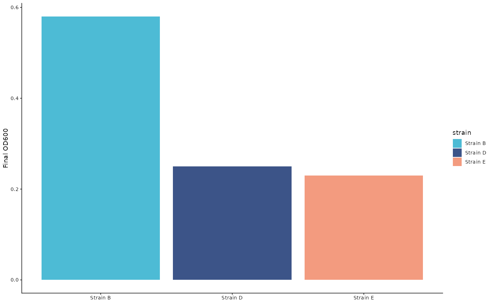

Draws a plot in the style of another one: the theme of the reference, and its colors for the groups that the two plots share. A group that is, for example, blue in the reference is blue in the plot as well, so that the figures of a paper agree with each other. Groups that the reference does not have get the colors of its palette that are still free.
Details
The theme of the reference replaces the theme of the plot as a whole. The discrete color and fill scales of the plot are replaced by manual scales that keep their name and guide; continuous scales are left alone. The labels, the layers and the data of the plot do not change.
See also
journal_audit() to find the groups that have different colors in
the figures of a paper.
Examples
library(ggplot2)
od <- subset(example_growth(), measure == "OD600")
reference <- ggplot(od, aes(time, value, color = strain)) +
geom_line() +
labs(x = "Incubation time (hr)", y = "OD600", color = NULL) +
scale_color_set("npg") +
journal_theme("nature")
# The last time point of three strains only, in the default style
last <- subset(od, time == max(time) & strain %in% unique(od$strain)[c(2, 4, 5)])
p <- ggplot(last, aes(strain, value, fill = strain)) +
geom_col() +
labs(x = NULL, y = "Final OD600")
match_style(p, reference)
